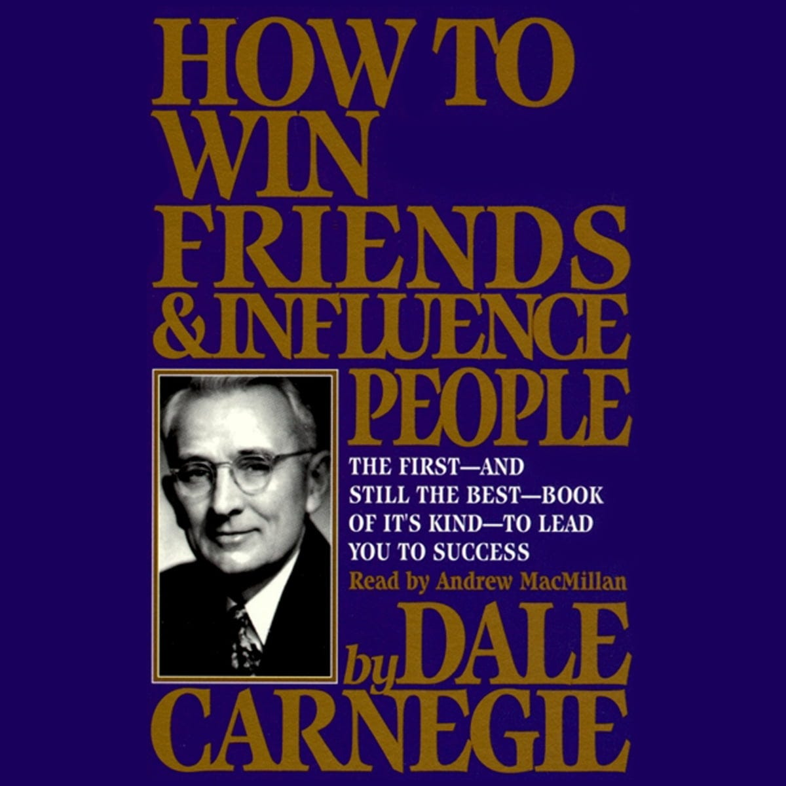

Book Review: How to Win Friends & Influence People
Rating: 3/10
Overview: Offers basic insights from 1936 with a tone of its era.

Introduction
In the landscape of personal development and interpersonal skills, few books have stood the test of time as prominently as Dale Carnegie’s “How to Win Friends and Influence People.” Despite its age, the core principles Carnegie presents remain remarkably relevant, addressing the timeless human desire for connection and understanding. However, it’s not without its controversies; some readers may find its techniques manipulative, and some of Carnegie’s idols (such as Robert E. Lee and John D. Rockefeller) and sexitst pro-capitalist ideals problematic.
In the following, I share my notes - a compilation of quotes and insights that I found particularly striking. These reflections are intended to capture the essence of Carnegie’s advice through my lens, underscoring its potential wisdom.
Part One: Fundamental Techniques in Handling People
This section covers the basic principles of interacting with others, emphasizing the importance of avoiding criticism, condemnation, or complaints.
By criticizing, we do not make lasting changes and often incur resentment.
Don’t criticize them, they are doing just as you would under similar circumstances.
Any fool can criticize, complain, and condemn—and most fools do. But it takes character and self-control to be understanding and forgiving.
Tell me what makes you feel important and I’ll tell you the type of person you are.
- I learned thirty years ago that it is foolish to scold. I have enough trouble overcoming my own limitations without fretting over the fact that God has not seen fit to distribute evenly the gift of intelligence.
John Wanamaker
- Judge not, that ye be not judeged. For with what judgment ye judge, ye shall be judged: and with what measure ye mete, it shall be measured to you again. And why beholdest thou the mote that is in thy brother’s eye, but considerest not the beam that is in thine own eye?
Matthew 7:1-3
- I will speak ill of no one. I will speak all the good I know of everybody.
Benjamin Franklin
- To understand all is to forgive all.
Evelyn Waugh
- I shall not pass this way again, so when I do it let me be kind.
Etienne de Grellet
Part Two: Six Ways to Make People Like You
Here, Carnegie presents simple strategies to become more likable and build stronger, more positive relationships with others.
Become genuinely interested in other people.
You can make more friends in two months by becoming interested in other people that in 2 years by trying to get other people interested in you.
It is the individual who is not interested in their fellow man that has the greatest difficulties in life and provides the greatest injury to others. It’s from those individuals that all human failures spring.
If the author doesn’t like people, than people won’t like their stories.
We all like people who admire us.
“I love my audience.”
- Every man I meet is my superior in some way, and in that I learn from him.
-
Ralph Waldo Emerson
Smile.
Encouragement is more effective teaching device than punishment.
Stop talking about what you want, and see things from other peoples sides.
Act and speak as if cheerfulness is already there.
Happiness depends on inside conditions. It is what you think about it.
To think rightly is to create.
- There is nothing good or bad, but thinking makes it so.
-
Shakespeare
- We become like that on which our hearts are fixed. Carry your chin in and the crown of your head high. We are gods in the chrysalis.
-
Jeffrey J. Denning
Remember that people like hearing their name.
Be a good listener. Encourage others to talk about themselves.
Talk in terms of the other person’s interests.
Make the other person feel important and do it sincerely.
Oil the cogs with little things such as please, thank you, if you don’t mind, and so on.
Recognize other people’s importance and recognize it sincerely.
Talk to people about themselves and they will listen for hours.
- The deepest urge in human nature is the desire to be important.
-
John Dewey
- The deepest principle in human nature is the craving to be appreciated.
-
William James
- Do unto others how you would have others do unto you.
-
Mathew 7:12
- But man, proud man, Drest in a little brief authority, Most ignorant of what he’s most assur’d; His glassy essence, like an angry ape, Plays such fantastic tricks before high heaven, As make the angels weep.
-
Shakespeare
Part Three: How to Win People to Your Way of Thinking
This part offers tactics for persuading others to your point of view without causing offense or arousing resentment.
The best way to win an argument is to avoid it.
You can’t win an argument.
Distrust your first impression.
Welcome the disagreement.
When two partners always agree then one of them is not necessary.
Perhaps there is something you haven’t thought about. Be thankful it’s been brought to your attention.
Watch out for your first reaction. It may be you at your worst, not your best.
You can measure the size of a person by what makes them angry.
Build bridges of understanding, not barriers of misunderstanding.
Dwell on areas where you agree with others.
Promise to think over their ideas and mean it. It’s easier to agree to think about their points.
Thank your opponents sincerely for their interests. Anyone who takes the time to disagree with you is interested in the same things you are.
Think of your opponents as people who want to help you. Think of your opponents as your friends.
When one person is yelling the other should be listening because when two people yell then no one is listening.
Questions to Ask Yourself
Could my opponents be right or partially right?
Is there truth or merit in their position or argument?
Is my reaction one that will relieve the problem, or just relieve my frustration?
Will my reaction draw my opponents further away or closer to me?
Will my reaction demonstrate the estimation of good will people have of me?
Will I win or lose? What price will I have to pay if I win?
If I am quiet about it will the disagreement blow over?
Is this difficult situation an opportunity for me?
- If you argue you will never have a person’s good will.
-
Benjamin Franklin
- Here lies the body of William Jay, Who died maintaining his right of way— He was right, dead right, as he sped along, But he’s just as dead as if he were wrong.
-
Carnege
- Hatred is never ended by hatered, but by love.
-
Buddah
- Yield larger things to which you can show no more than equal right; and yield lesser ones, though clearly your own. Better give your path to a dog than be bitten by him in contesting for the right. Even killing the dog would not cure the bite.
-
Abraham Lincoln
Show respect for the other person’s opinions. Never say “You’re wrong”.
If you are going to prove anything, don’t make anybody know it.
Be wiser than other people if you can; but do not tell them so.
When you argue you are not persuading.
Ridicule and abuse never make someone agree with you.
Benjamin Franklin never spoke in certainties.
Reply to your opposition stating that in some cases you could see their perspective being right. You could also see some cases in which that is not the case.
Conversations will go more pleasantly and a modest suggestion will be better received.
You will have less mortification when found to be in the wrong, and more people to agree with you when you are right.
Make it a point not to disagree or tell the other person they are wrong.
Being diplomatic will help you gain your point.
- Men must be taught as if you taught them not, and thing proposed as things forgot.
-
Alexander Pope
- You cannot teach a man anything, only help him find it within himself.
-
Galileo
- We sometimes find ourselves changing our minds without any resistance or heavy emotion, but if we are told that we are wrong we resent the imputation and harden our hearts. We are incredibly heedless in the formation of our beliefs, but find ourselves filled with an illicit passion for them when anyone proposes to rob us of their companionship. It is obviously not the ideas themselves that are dear to us, but our self-esteem which is threatened.
-
James harvey Robinson, The Mind in the Making
- Ben you are impossible. Your opinions have a slap in them for everyone who differs with you. They have become so offensive that nobody cares for them. Your friends find that they enjoy themselves better when you are not around. You know so much that no one can tell you anything. Indeed no one is going to try for the act and effort would only lead to discomfort and hard work. Therefore you are likely never to know anymore than you do now, which is very little.
-
Quote from Benjamin Franklins Autobiography
- I judge people by their principles not by my own.
-
MLK
- Agree with thyn adversary quickly.
-
Jesus
If you are wrong admit it quickly and emphatically.
When you say the other person’s criticism of yourself first, then the criticism is coming from your mouth, and the blow will be much softer.
Any fool can defend their mistakes, but it takes a large person to discuss failure.
By fighting you never get enough, but by yielding you get more than you expected.
Begin in a friendly way.
- Gentleness and friendliness are stronger than brute force.
- If you come at me with your fists doubled, I think I can promise you that mine will double as fast as yours; but if you come to me and say, ‘Let us sit down and take counsel together, and, if we differ from each other, understand why it is that we differ, just what the points at issue are,’ we will presently find that we are not so far apart after all, that the points on which we differ are few and the points on which we agree are many, and that if we only have the patience and the candor and the desire to get together, we will get together.
-
Woodrow Wilson
- A drop of honey catches more flies than a gallon of gall.
-
Abraham Lincoln
Get the other person saying “yes yes” immediately.
Begin and keep on emphasizing the things on which you agree. You are both striving for the same end, but your only difference is of method not of purpose.
A no response is a most difficult handicap to overcome. When you have said no, all your pride and personality demands that you remain consistent with yourself.
It takes more force to go in the opposite direction.
When someone says no they are doing more than that. The body is doing more than that. When a person says yes, no physical or mental withdraw happens.
A skillful speaker gets a yes response.
The more yeses we can receive, the more likely we are to succeed at capturing our proposal.
The Socratic method is based on getting a yes response.
Ask gentle questions to get a yes response.
He who treads softly goes far.
Let the other person do a great deal of the talking.
- Let the other person talk themselves out.
Let the other person feel the idea is theirs.
Try honestly to see things from the other person’s point of view.
Success when dealing with people depends on a sympathetic grasp of the other person’s viewpoint.
Cooperativeness in conversation is achieved when you show that you consider the other person’s ideas and feelings as important as your own.
Think always in terms of the other person’s point of view.
Be sympathetic to the other person’s ideas and desires.
- I don’t blame you for feeling how you do, and if I were you I would feel as you do.
There but for the grace of god go I.
Proverb
Appeal to the nobler motives.
Basically there is a real reason why someone does something, and then the reason they tell people (the nobler reason). Appeal to these reasons.
Story about a guy who didn’t want a specific picture of him in the paper, but wrote a letter saying that it was his mother who did not like this picture. Appealing to the nobler motive of respecting a mothers wishes.
Dramatize your ideas.
- Show your point, don’t just explain it.
Throw down a challenge.
- Motivate with friendly competition.
Part Four: Be a Leader: How to Change People Without Giving Offense or Arrousing Resentment
The final section focuses on leadership and how to encourage others to change their behavior or beliefs in a positive way.
- Being a leader often involves changing people’s behaviors and attitudes.
Begin with praise and honest appreciation.
Call attention to people’s mistakes indirectly.
Talk about your own mistakes before criticizing others.
Ask questions instead of giving direct orders.
Let the other person save face.
Praise the slightest improvement, and praise every improvement. Be hearty in your approbation and lavish in your praise.
Give the other person a fine reputation to live up to.
- Assume a virtue if you have it not.
-
Shakespeare
Use encouragement. Make the fault seem easy to correct.
Make the other person happy about doing the thing that you suggest.
“Playbook”
Be sincere, and do not promise anything.
Know what you want the other person to do.
Be empathetic, and ask what the other person wants.
What are the benefits the other person will get doing what you want?
Match those benefits to the things that they want.
When you make your request, put it in a form that they personally will benefit from doing this.
Conclusion
Dale Carnegie’s “How to Win Friends and Influence People” provides a foundational perspective on the art of interaction and persuasion. While its age-old advice resonates with timeless truths about human nature, the modern reader must navigate its principles with a critical eye.